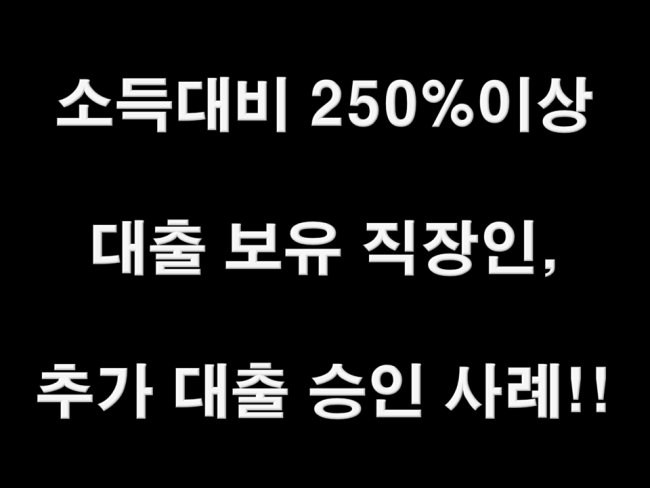
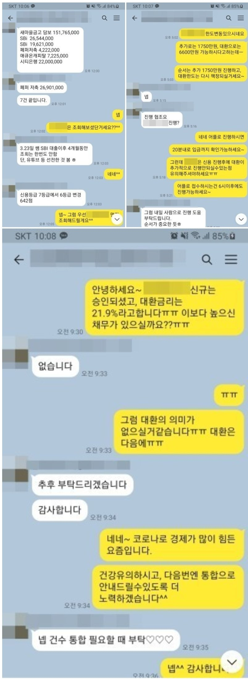

소득대비 250%이상 대출보유 직장인, 추가 대출 승인 사례!!

안녕하세요^^ 뱅크앤론 상담사 유미광 과장입니다^^ 오늘은 제가 진행해드린 이** 고객님의 대출 사례를
소개해 드리겠습니다. 이** 고객님께서는 월 급여 320만원 수령중이시고, 현 직장에 1년 3개월째 재직중인
4대보험 가입 직장인이셨습니다. 사용중이신 대출로는 새마을금고 집담보15170만, 시티은행 2200만, 애큐
온캐피탈 725만, 페퍼저축 2건 3110만, SBI저축 2건 4610만원으로 소득대비 기대출이 과도한 편이였습니
다. 기대출 통합 및 추가자금이 필요하셔서 문의주신다고하셨습니다. 대출이 쉬운상황이 아니셨지만, 이**
고객님께서 문의주신 시점에서 승인 좋은 금융사를 선정하여 조회해드린 결과, 한 금융사에서 추가대출
1750만원 21.9%, 대환 6600만원 21.9%로 진행가능하시다는 안내를 받았습니다. 통합하시기엔 기대출
보다 이율이 높아 통합상품은 진행하지않으셨고, 추가자금만 진행하셨습니다. 안타깝게 통합까지 진행 되지
는 않으셨지만, 추가 자금진행 결과에 이** 고객님께서도 매우 만족하셨습니다. 자세한 사항은 아래 저와 이
**고객님의 카톡대화 내용을 참고하실 수 있습니다. 감사합니다^^
